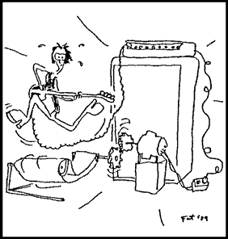

|

Lunch With The Fat Man #3
Practical advice for musicians and would-be musicians. But it's not just about the music. It's about life. It's about art. It's about lunch! Let's eat!
- - - - - - - - - -
by George Alistair Sanger
Installment index
"Satisfaction: A Very Bad Sign"
Hi. Sit down. What are you having? Welcome to Lunch With The Fat Man.
I was thinking about an interview I had seen with some great ballet dancer (on PBS, it goes without saying... this was before A&E) who was saying about his performance that he was happy but not satisfied. As so often happens, after mulling this statement over for a second or two, I came up with a myriad of thoughts that apply to music, art, and all aspects to human achievement and life itself. For the sake of brevity and continuity however, I'll focus only on the musical manifestations of these mullings.
It seems that we are each in the center of our universe... oh yes, I'm supposed to focus. We are each, musically, in the center of our universe. There's always someone better, and always someone worse. Or, in terms that you guitar players can understand, there is always someone faster and always someone slower. Even the smug, nimble piano teachers who humiliate us weekly at our lessons look a bit pale after a Horowitz concert. Everybody's always in the middle -- in someone's shadow, and overshadowing someone else.
 This leaves the goal-minded person somewhat awash; no matter what he does, no matter how good he gets, he'll end up in relatively the same position, surrounded by people better and worse than him. A goal-oriented musician is like a suicidal Spanish explorer -- he'll find that he can't sail off the edge of the earth no matter how hard he tries. It's not for me to say, but perhaps he's better off for not getting what he wants.
On the other hand, the process-minded musician is like the explorer who just loves to sail. For him, as the term "the best" loses its meaning, the thought of “striving to be the best" remains quite valid. In the treadmill that is music, the magic seems to come simply from keeping the wheel spinning. Spin it forward, you get "We are the Champions," Beethoven, and Eddie Van Halen. Spin it backwards, you get “Heartbreak Hotel”, Schubert, and the Stones.
Technically, Mick Jagger is a pretty bad singer. But he tries, does the best with what God gave him (e.g., lips), and for that reason captures our hearts. Likewise, Keith Richards plays a fairly rough guitar, but always seems to be playing at the edge of his ability. So much that he's considered one of the great guitar players. We talk about the "soul" in his playing, but I prefer to see it as art, and Keith and Mick have the one thing that makes art work. They set up expectations, and then either fill the expectations or don't. And that's something that can be done at any level of skill, but only when the heart is in it. No matter who might be better or worse than the artist.
Therein lies the reason that the Stones were an incentive for many of us to get started in Rock and Roll. They personify the fact that perfect art can be accomplished (and money made and girls gotten, again for you guitarists) without flaunting technique. Maynard Ferguson provides a stark example of the essence of art. He plays the highest note you've ever heard, but he strains and strains, plays one higher, reaches into the depths of his soul, plays a higher one, and, just when you think he's going to keel over from a coronary, plays the last note of the piece two octaves higher yet. He sandbags so that you sense that he's playing at his edge, and that heightens the sense of expectations and fulfillment. You feel that you are listening to the highest notes ever played, but I swear by Prince's guitar picks, I’ve heard higher players.
This leads us to the most honest and most productive state of mind to keep when you're creating music. Bear in mind at all times that whatever you're doing, however long you've been doing it, and however good it is, is "good, and could be better." Mozart is good and could be better. Living Colour is good and could be better. Neil Young is good and could be better. Your kid brother is good and could be better. It's all the same, and there's as much potential for good art in any of them. The art emerges with effort, attention, and love, with the climbing of the rungs in the treadmill, with the setting up and fulfillment of expectations that come from the sense that you are living at the edge of your abilities.
Perhaps this is why the greatest rock artists create a feeling in us that their music matters to them. It really has to matter in order for these artists to push themselves to that dangerous area just beyond their limitations.
So when my clients come to the studio to work with me, their songs are good and could be better, and when we're done two years later, they're good and could be better. Thinking you're the best feels good only because it's a psychological trick you play on yourself, and the real pleasure comes from the fact that you rose up from below. So if you're depressed now because you think you're fantastic, take heart. You're really pretty awful, and you're stuck rocking back and forth in a treadmill with a long way to go before you get nowhere. Just like the Beatles.
Say, this was great, but could have been better. Let's have lunch more often.
 Next page | "For Every Philosophy There Is an Equal and Opposite Philosophy" Next page | "For Every Philosophy There Is an Equal and Opposite Philosophy"
1, 2, 3
|